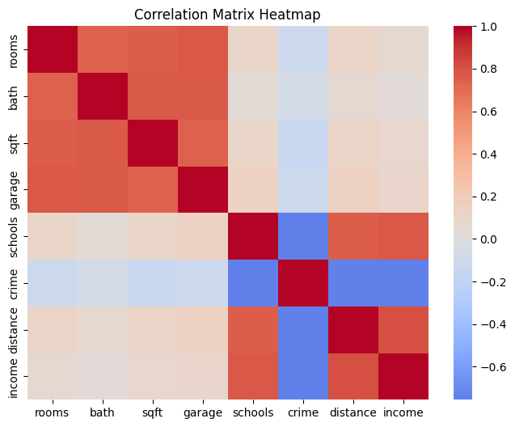

import numpy as np
import pandas as pd
import seaborn as sns
import matplotlib.pyplot as plt
np.random.seed(42)
n = 200
mean1 = np.zeros(4)
cov1 = np.full((4,4), 0.8)
np.fill_diagonal(cov1, 1)
group1 = np.random.multivariate_normal(mean1, cov1, n)
mean2 = np.zeros(4)
cov2 = np.full((4,4), 0.8)
np.fill_diagonal(cov2, 1)
group2 = np.random.multivariate_normal(mean2, cov2, n)
data = np.hstack((group1, group2))
df = pd.DataFrame(data, columns=["rooms", "bath", "sqft", "garage",
"schools", "crime", "distance", "income"])
df["rooms"] = 3 + df["rooms"] * 1.2
df["bath"] = 2 + df["bath"] * 0.8
df["sqft"] = 1500 + df["sqft"] * 300
df["garage"] = 1 + df["garage"] * 0.5
df["schools"] = 5 + df["schools"] * 1.5
df["crime"] = 50 - df["crime"] * 10
df["distance"] = 10 + df["distance"] * 2
df["income"] = 60000 + df["income"] * 8000
corr = df.corr()
cov = df.cov()
plt.figure(figsize=(8,6))
sns.heatmap(corr, annot=False, cmap='coolwarm', center=0)
plt.title("Correlation Matrix Heatmap")
plt.show()
print("Covariance Matrix:\n", cov)
Covariance Matrix:
rooms bath sqft garage schools \
rooms 1.170565 0.578442 226.712141 0.402969 0.165186
bath 0.578442 0.520655 153.051205 0.265776 0.042117
sqft 226.712141 153.051205 76365.107914 98.431732 41.912809
garage 0.402969 0.265776 98.431732 0.229164 0.096007
schools 0.165186 0.042117 41.912809 0.096007 2.052282
crime -1.244739 -0.508013 -380.886596 -0.521502 -10.258421
distance 0.234267 0.091537 57.394686 0.133176 2.052900
income 590.375758 190.326319 177182.411264 363.295200 8387.138229
crime distance income
rooms -1.244739 0.234267 5.903758e+02
bath -0.508013 0.091537 1.903263e+02
sqft -380.886596 57.394686 1.771824e+05
garage -0.521502 0.133176 3.632952e+02
schools -10.258421 2.052900 8.387138e+03
crime 90.186235 -13.620349 -5.422707e+04
distance -13.620349 3.596559 1.156696e+04
income -54227.067786 11566.961854 5.714393e+07